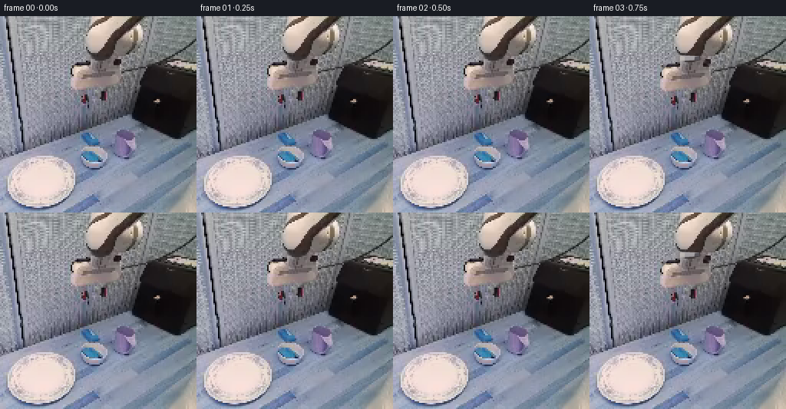
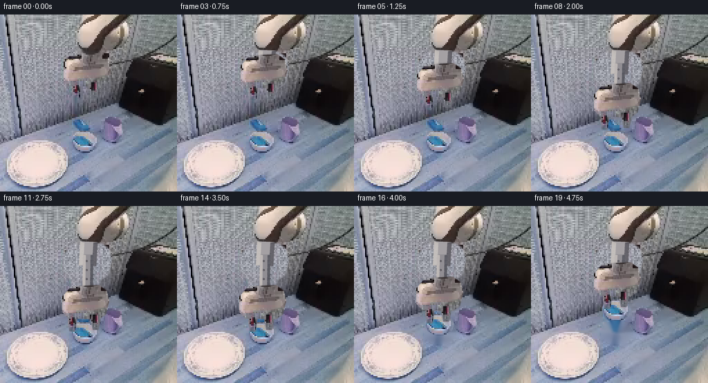
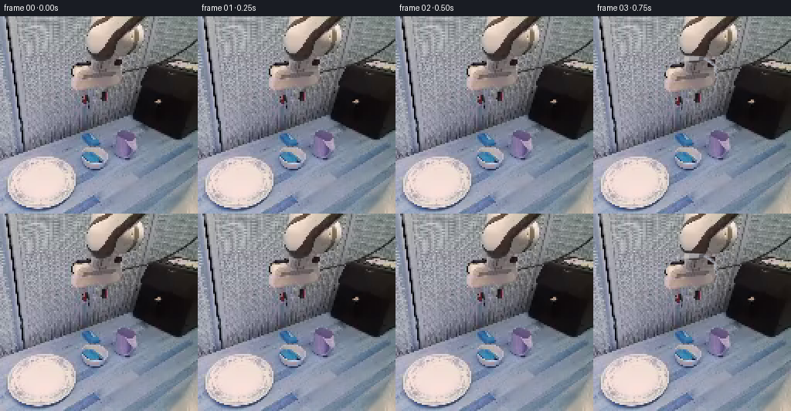
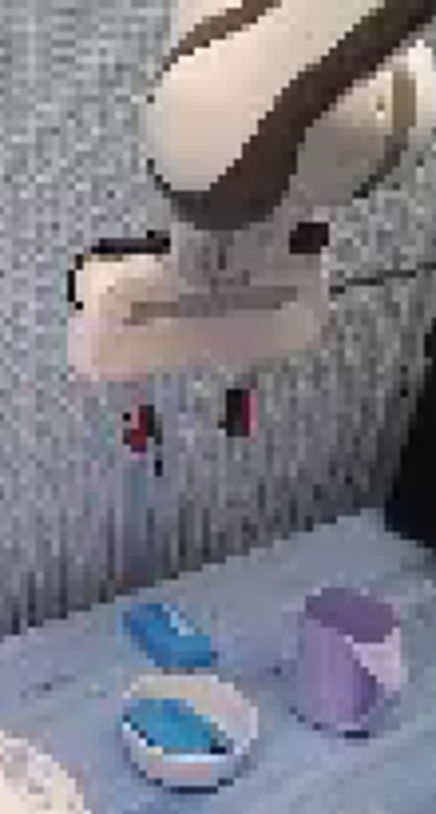
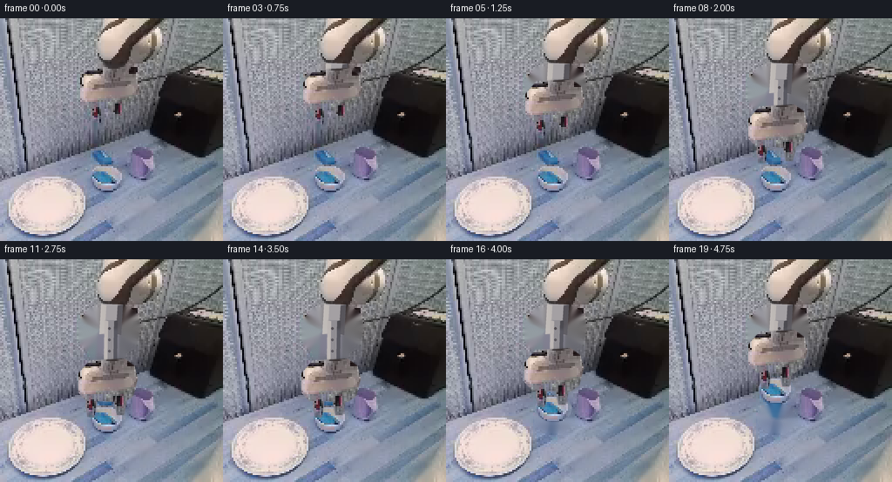

CODING AGENTS AS PIXEL WORLD MODELS
traex/GPT-5.6-Sol · common50_0043
点击播放 · 原生 RGB 像素
逐轮保存的候选
回放视频、检查图与代码变化。
每份候选均可单独播放。实际图片检查记录在下方工具轨迹中。
候选 01播放与检查图
点击播放 · 原生 RGB 像素


展开代码变化
--- 上一保存版本
+++ 本次保存版本
@@ -0,0 +1,188 @@
+from pathlib import Path
+
+import cv2
+import numpy as np
+from PIL import Image, ImageDraw, ImageFilter
+
+import artifact_io
+
+
+CASE_DIR = Path(__file__).resolve().parent
+W = H = 256
+
+
+def smoothstep(x):
+ x = float(np.clip(x, 0.0, 1.0))
+ return x * x * (3.0 - 2.0 * x)
+
+
+def aa_polygon(points, blur=0.55):
+ """Make a lightly antialiased mask while retaining the source's crisp pixels."""
+ scale = 4
+ im = Image.new("L", (W * scale, H * scale), 0)
+ d = ImageDraw.Draw(im)
+ d.polygon([(round(x * scale), round(y * scale)) for x, y in points], fill=255)
+ im = im.resize((W, H), Image.Resampling.LANCZOS)
+ if blur:
+ im = im.filter(ImageFilter.GaussianBlur(blur))
+ return np.asarray(im)
+
+
+def ellipse_mask(box, blur=0.55):
+ scale = 4
+ im = Image.new("L", (W * scale, H * scale), 0)
+ d = ImageDraw.Draw(im)
+ d.ellipse(tuple(round(v * scale) for v in box), fill=255)
+ im = im.resize((W, H), Image.Resampling.LANCZOS)
+ if blur:
+ im = im.filter(ImageFilter.GaussianBlur(blur))
+ return np.asarray(im)
+
+
+def over(dst, src, alpha, dx=0, dy=0):
+ """Composite a full-frame source after an integer rigid translation."""
+ mat = np.float32([[1, 0, int(dx)], [0, 1, int(dy)]])
+ moved = cv2.warpAffine(src, mat, (W, H), flags=cv2.INTER_NEAREST,
+ borderMode=cv2.BORDER_CONSTANT, borderValue=(0, 0, 0))
+ ma = cv2.warpAffine(alpha, mat, (W, H), flags=cv2.INTER_LINEAR,
+ borderMode=cv2.BORDER_CONSTANT, borderValue=0)
+ a = ma.astype(np.float32)[..., None] / 255.0
+ return np.clip(dst.astype(np.float32) * (1.0 - a) + moved.astype(np.float32) * a,
+ 0, 255).astype(np.uint8)
+
+
+def soft_ellipse_layer(frame, box, color, opacity, blur=4.0):
+ mask = ellipse_mask(box, blur=0)
+ mask = np.asarray(Image.fromarray(mask).filter(ImageFilter.GaussianBlur(blur)))
+ a = (mask.astype(np.float32) * (opacity / 255.0))[..., None] / 255.0
+ col = np.empty_like(frame)
+ col[:] = color
+ return np.clip(frame * (1.0 - a) + col * a, 0, 255).astype(np.uint8)
+
+
+def mechanical_column(frame, bottom_y, x_shift):
+ """Render the two nested rigid members of the arm's prismatic wrist."""
+ # Draw at 4x so diagonals agree with the antialiased camera image.
+ s = 4
+ layer = Image.new("RGBA", (W * s, H * s), (0, 0, 0, 0))
+ d = ImageDraw.Draw(layer)
+ sx = int(x_shift * s)
+
+ def poly(points, fill):
+ d.polygon([(int(x * s) + sx, int(y * s)) for x, y in points], fill=fill)
+
+ # Stationary outer sleeve, attached under the cream upper arm.
+ poly([(118, 51), (143, 52), (141, 87), (116, 86)], (164, 160, 163, 255))
+ poly([(118, 51), (124, 53), (122, 85), (116, 86)], (199, 193, 190, 235))
+ poly([(137, 53), (143, 52), (141, 87), (135, 86)], (94, 92, 99, 220))
+ # Inner sliding member; only more of it is revealed, its width never changes.
+ by = max(73, int(bottom_y))
+ poly([(122, 70), (137, 70), (136, by), (121, by)], (145, 142, 147, 255))
+ poly([(122, 70), (126, 71), (125, by), (121, by)], (190, 184, 182, 245))
+ poly([(133, 71), (137, 70), (136, by), (132, by)], (79, 79, 87, 205))
+ # Repeated small fasteners make the extension read as machinery, not rubber.
+ for yy in range(78, by - 2, 13):
+ d.ellipse(((126 * s + sx), yy * s, (129 * s + sx), (yy + 3) * s),
+ fill=(76, 72, 76, 180))
+ layer = layer.resize((W, H), Image.Resampling.LANCZOS)
+ rgba = np.asarray(layer)
+ a = rgba[..., 3:4].astype(np.float32) / 255.0
+ return np.clip(frame.astype(np.float32) * (1 - a) + rgba[..., :3] * a,
+ 0, 255).astype(np.uint8)
+
+
+def build_frames():
+ first = np.asarray(Image.open(CASE_DIR / "first_frame.png").convert("RGB"))
+
+ # Separate the moving wrist, its independently actuated fingers, and the bowl.
+ housing_a = aa_polygon([
+ (105, 57), (145, 55), (156, 63), (160, 78), (155, 98),
+ (145, 105), (101, 104), (92, 94), (91, 73)
+ ], 0.45)
+ left_a = aa_polygon([(106, 96), (117, 96), (117, 107), (114, 123),
+ (106, 122), (104, 109)], 0.38)
+ right_a = aa_polygon([(131, 94), (143, 94), (143, 108), (140, 120),
+ (132, 120), (129, 107)], 0.38)
+ bowl_a = aa_polygon([(103, 179), (107, 172), (114, 168), (129, 168),
+ (140, 173), (145, 182), (142, 191), (134, 198),
+ (116, 198), (107, 193), (103, 186)], 0.48)
+
+ # Remove moving pieces once. TELEA is limited to small regions and borrows the
+ # genuine wall/table texture immediately surrounding each object.
+ arm_remove = np.maximum.reduce([housing_a, left_a, right_a])
+ arm_remove = cv2.dilate((arm_remove > 20).astype(np.uint8) * 255,
+ np.ones((3, 3), np.uint8), iterations=1)
+ clean_arm = cv2.inpaint(first, arm_remove, 4, cv2.INPAINT_TELEA)
+ bowl_remove = cv2.dilate((bowl_a > 20).astype(np.uint8) * 255,
+ np.ones((3, 3), np.uint8), iterations=1)
+ clean_all = cv2.inpaint(clean_arm, bowl_remove, 4, cv2.INPAINT_TELEA)
+
+ frames = []
+ for i in range(20):
+ # The opening frames provide a short, stable observation of the workspace.
+ if i <= 2:
+ frames.append(first.copy())
+ continue
+
+ if i <= 11: # controlled approach
+ q = smoothstep((i - 2) / 9.0)
+ travel = 59.0 * q
+ opening = 4.0 * q
+ bowl_lift = 0.0
+ elif i <= 14: # fingers close around the rim
+ travel = 59.0
+ qclose = smoothstep((i - 11) / 3.0)
+ opening = 4.0 * (1.0 - qclose) - 1.0 * qclose
+ bowl_lift = 0.0
+ else: # secured bowl rises with the wrist
+ qlift = smoothstep((i - 14) / 5.0)
+ bowl_lift = 33.0 * qlift
+ travel = 59.0 - bowl_lift
+ opening = -1.0
+
+ dy = int(round(travel))
+ dx = int(round(-2.0 * min(travel / 59.0, 1.0)))
+
+ # During the lift the original bowl is removed and the exact bowl pixels
+ # are translated rigidly with the gripper. Before then it remains untouched.
+ if i >= 15:
+ frame = clean_all.copy()
+ # Contact shadow remains directly beneath the carried bowl and softens
+ # as the bowl gains height.
+ sh_y = int(round(-bowl_lift * 0.22))
+ frame = soft_ellipse_layer(frame, (106, 189 + sh_y, 145, 201 + sh_y),
+ (53, 58, 74), int(47 - bowl_lift * 0.7), 3.2)
+ else:
+ frame = clean_arm.copy()
+
+ # A subtle table shadow cues the descending mass without moving the camera.
+ if travel > 35:
+ near = np.clip((travel - 35) / 24.0, 0, 1)
+ frame = soft_ellipse_layer(frame, (100, 158, 151, 174),
+ (48, 51, 66), int(20 * near), 4.5)
+
+ # Arm members are laid back-to-front: telescoping column, palm housing,
+ # held bowl, then the two opposing fingers in front of the rim.
+ frame = mechanical_column(frame, 63 + dy, dx)
+ frame = over(frame, first, housing_a, dx, dy)
+
+ if i >= 15:
+ frame = over(frame, first, bowl_a, 0, -int(round(bowl_lift)))
+
+ finger_dy = dy
+ ldx = dx + int(round(-opening))
+ rdx = dx + int(round(opening))
+ frame = over(frame, first, left_a, ldx, finger_dy)
+ frame = over(frame, first, right_a, rdx, finger_dy)
+
+ frames.append(frame)
+
+ frames = np.stack(frames).astype(np.uint8)
+ # Contract-critical: preserve the exact supplied image, not a re-encoding.
+ frames[0] = first
+ return frames
+
+
+if __name__ == "__main__":
+ artifact_io.save(build_frames(), CASE_DIR)
+
候选 02播放与检查图
点击播放 · 原生 RGB 像素


展开代码变化
--- 上一保存版本
+++ 本次保存版本
@@ -107,12 +107,18 @@
(140, 173), (145, 182), (142, 191), (134, 198),
(116, 198), (107, 193), (103, 186)], 0.48)
- # Remove moving pieces once. TELEA is limited to small regions and borrows the
- # genuine wall/table texture immediately surrounding each object.
+ # Remove moving pieces once. The exposed area behind the arm is all wall. A
+ # patch tiled from the unobstructed wall at x=30..84 is more stable than a
+ # large inpaint and retains the scene's real fine vertical texture.
arm_remove = np.maximum.reduce([housing_a, left_a, right_a])
arm_remove = cv2.dilate((arm_remove > 20).astype(np.uint8) * 255,
np.ones((3, 3), np.uint8), iterations=1)
- clean_arm = cv2.inpaint(first, arm_remove, 4, cv2.INPAINT_TELEA)
+ wall_fill = first.copy()
+ for x in range(W):
+ wall_fill[:, x] = first[:, 30 + ((x - 90) % 55)]
+ edge = cv2.GaussianBlur(arm_remove, (0, 0), 1.15).astype(np.float32)[..., None] / 255.0
+ clean_arm = np.clip(first.astype(np.float32) * (1.0 - edge) +
+ wall_fill.astype(np.float32) * edge, 0, 255).astype(np.uint8)
bowl_remove = cv2.dilate((bowl_a > 20).astype(np.uint8) * 255,
np.ones((3, 3), np.uint8), iterations=1)
clean_all = cv2.inpaint(clean_arm, bowl_remove, 4, cv2.INPAINT_TELEA)
可观测工具轨迹
实际执行的命令与返回图片。
命令 1exit 0
/bin/bash -lc "cat prompt.txt && printf '\\n--- GENERATION_RULES ---\\n' && cat GENERATION_RULES.md"
命令 2exit 1
/bin/bash -lc "find . -maxdepth 2 -type f -printf '%p\\n' | sort && printf '\\n--- binaries ---\\n' && command -v ffmpeg && command -v python3"
命令 3exit 0
/bin/bash -lc "cat task_spec.json && printf '\\n--- artifact_io.py ---\\n' && sed -n '1,260p' artifact_io.py"
命令 4exit 0
/bin/bash -lc "python3 - <<'PY'
from PIL import Image
im=Image.open('first_frame.png')
print(im.mode, im.size)
import numpy as np
x=np.asarray(im)
print(x.shape,x.dtype,x.min(),x.max(),x[0,0], x.mean((0,1)))
PY"命令 5exit 0
/bin/bash -lc "python3 - <<'PY'
from PIL import Image
im=Image.open('first_frame.png')
im.resize((1024,1024)).save('first_frame_up.png')
im.crop((75,0,185,205)).resize((660,1230)).save('crop_robot_target.png')
PY"命令 6exit 0
/bin/bash -lc "python3 - <<'PY'
try:
import cv2;print('cv2',cv2.__version__)
except Exception as e: print(e)
PY"命令 7exit 0
/bin/bash -lc "python3 generate.py && python3 - <<'PY'
import numpy as np
from PIL import Image
p=np.load('pixels.npz')['pixels']
f=np.array(Image.open('first_frame.png'))
re=np.stack([(p[:,:,0]>>16)&255,(p[:,:,0]>>8)&255,p[:,:,0]&255],-1).astype('uint8')
print('pixels',p.shape,p.dtype,'frame00 exact',np.array_equal(re,f))
print('outputs',len(list(__import__('pathlib').Path('frames').glob('*.png'))))
PY"命令 8exit 0
/bin/bash -lc "python3 generate.py && python3 - <<'PY'
import hashlib
from pathlib import Path
import numpy as np
from PIL import Image
src=np.asarray(Image.open('first_frame.png').convert('RGB'))
out=np.asarray(Image.open('frames/00.png').convert('RGB'))
frames=np.stack([np.asarray(Image.open(f'frames/{i:02d}.png')) for i in range(20)])
print('shape/dtype:',frames.shape,frames.dtype)
print('frame00 exact:',np.array_equal(src,out))
print('changed pixels by frame:',[int(np.any(frames[i]"'!=frames[i-1],axis=2).sum()) for i in range(1,20)])
print('"'artifacts:',[(p.name,p.stat().st_size) for p in map(Path,['pixels.npz','index.html','inspection.png','transition_check.png'])])
PY"视觉工具实际返回图片 1

视觉工具实际返回图片 2

视觉工具实际返回图片 3

视觉工具实际返回图片 4

保存候选 2 份；完成命令 8 次；可验证图片返回 4 张。原始 API 响应与完整日志保留在本地。